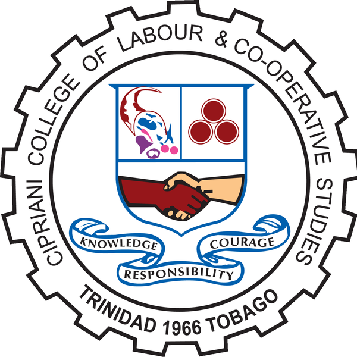

Start Here. Go Anywhere.
Valsayn Campus, on the Churchill Roosevelt Highway
NO REQUIREMENTS
Introductory Programmes
Your way in to our degree progression, or straight on to our core programmes.
WITH CSEC PASSES
Direct Entry
Your CSEC passes give you entry into our core programmes.

Cipriani College of Labour & Co-operative Studies | cclcs.edu.ttEvery programme is available from Certificate all the way to Degree.
PRM
Project Management
OSHE
Occupational Safety, Health and the Environment
HRM
Human Resource Management
CORP
Co-operative and Credit Union Management
SAM
Security Administration and Management
LBS
Labour Studies
ACTT Accredited
All core programmes are industry recognised and accredited by the Accreditation Council of Trinidad and Tobago.
100%
GATE covers 100% of tuition fees.
Full-Time or
Part-Time
Classes that fit around your work and your life.